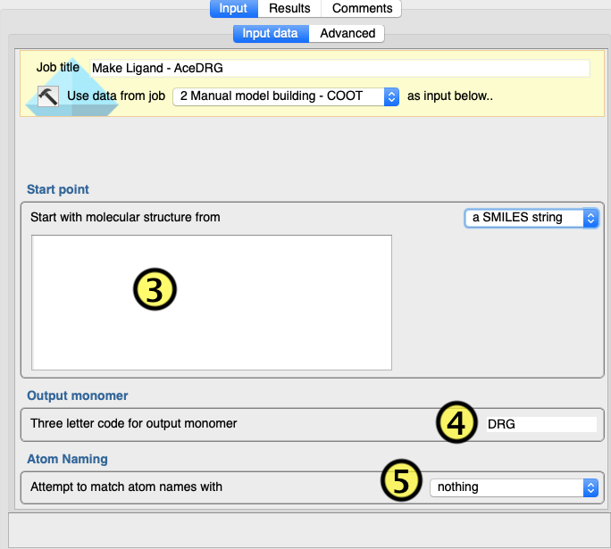

Make Ligand Coordinate and Restraint Dictionaries with Acedrg¶
The Make Ligand task uses the program
ACEDRG
to derive stereo-chemical information about monomers/ligands (or small
molecules). ACEDRG can derive “ideal” bond lengths, angles for an
unknown monomer/ligand. It also generates information about planar
groups and stereo-chemical properties in the monomer/ligand. The minumum
information Acedrg requires is element types of atoms in the
monomer/ligand, and the basic bonding pattern in the monomer/ligand,
such as atom connnections and bond-orders
Make Ligand accepts SMILES strings (either as a file or pasted
text) and MOL files as input. Also Lidia: Coot’s Ligand Builder can
be used to generate the input for ACEDRG The choice of input method
is selected using drop-down menu(1).
If the menu is set to “a MOL file” or “a SMILES file”, then a
file of the appropriate type must be loaded/selected in the data
selector menu(2).
If the menu is set to “a SMILES string”, then a text box is shown
into which a SMILES string may be typed/pasted(3).
Clicking the Run button will then run ACEDRG with the MOL or
SMILES as input.
.. figure:: lidia.png
alt:
Figure 2:Lidia
Figure 2:Lidia
If the menu is set to “a sketch”, then when the “Run” button is
pressed, the first thing that will happen is that Lidia(Figure 2)
will be launched. When “a sketch” is selected an option to provide
a starting point for the sketch is also shown. The starting point
input may be a MOL file or output from a previous Make Ligand
job. Lidia is a molecular sketcker provided by COOT. It allows
the user to create 2D (with stereo-isomer information) sketches of
molecules. The output of Lidia is subsequently passed to ACEDRG
by the Make Ligand task. In order for this to happen correctly, the
user must click Apply(6) then Close(7) when
finished sketching with Lidia.
The 3-letter code to be given to the monomer should be typed into
text box(4)

Figure 3: Main Make Ligand options with SMILES input box¶
Although ACEDRG attempts to name atoms sensibly, it is sometimes
desirable to try to match the atom names to those in a similar
structure. For instance, if the ligand to be generated contains a
large group of atoms in common with those of another ligand, it can
be useful to make sure the same atoms have the same names. This can
be done by changing the atom matching menu(5) from nothing to
either: a specific 3-letter code, in which case a text box appears
into which the 3-letter code of the existing reference ligand should
be typed; or use dictionary in which case a CCP4i2 Geometry
dictionary data selector appears - an existing dictionary in the
CCP4i2 database or dictionary file should supplied; or all monomers
in which case the whole CCP4/refmac5 monomer library is searched for
a matching group of atoms.
This task has one advanced option - the number of random RDKIT
starting structures. The task will attempt to generate a sensible
geometric conformation of the generated ligand atoms, in addition to
the restraint dictionary. The RDKIT library is used to optimize the
geometry. In order to avoid finding a local minimum, several initial
arrangements of atoms are optimized; the optimized geometry with the
lowest energy of them all is accepted. The more initial conformations
are used, the more likely a better optimal geometry will be found.